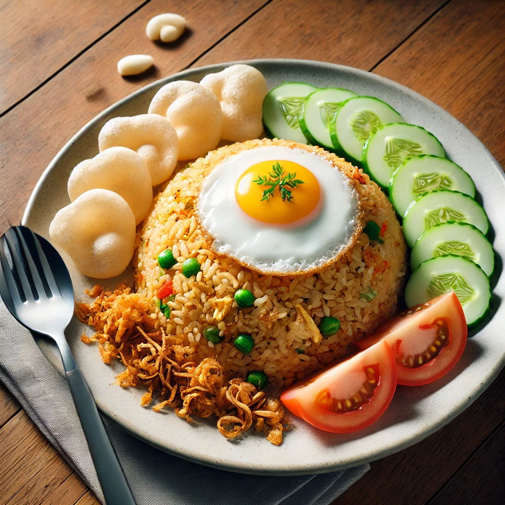

Nasi Goreng Recipes

Description
Nasi Goreng, or Indonesian fried rice, is one of the most popular dishes in Indonesia. This dish is loved for its
savory, slightly sweet, and smoky flavor, making it a favorite for breakfast, lunch, or dinner. Today, we will
guide you step by step on how to make authentic Indonesian Nasi Goreng at home.
Ingridients
Main Ingridients:
- 2 cups cooked rice (preferably day-old rice)
- 2 tablespoons vegetable oil
- 2 cloves garlic, minced
- 2 shallots, finely chopped
- 1 teaspoon shrimp paste (optional, for a more authentic taste)
- 1 egg
- 100 grams chicken breast, sliced (or shrimp/tofu for a vegetarian option)
- 1/2 teaspoon salt
- 1/2 teaspoon ground white pepper
Seasoning Sauce:
- 2 tablespoons sweet soy sauce (Kecap Manis)
- 1 teaspoon soy sauce
- 1 teaspoon chili sauce (optional, for extra spice)
Toppings (Optional but Recommended):
- Fried shallots
- Slices of cucumber and tomato
- Fried egg (sunny side up)
- Prawn crackers (kerupuk)
How to Cook Great Nasi Goreng
Step 1: Preparing Ingridients
- If using chicken or shrimp, season it lightly with salt and pepper.
- Beat the egg in a small bowl and set aside.
- Mince the garlic, chop the shallots, and prepare the sauces.
Step 2: Cooking the Fried Rice
- Heat the vegetable oil in a large wok or frying pan over medium heat.
- Add the minced garlic and shallots, then sauté until fragrant.
- If using shrimp paste, add it now and stir well.
- Add the chicken or shrimp, stir-fry until fully cooked.
- Push everything to one side of the pan, then pour the beaten egg into the empty side. Scramble the egg until
fully cooked, then mix everything together.
- Add the cooked rice, breaking up any clumps with a spatula.
- Pour the sweet soy sauce, soy sauce, and chili sauce over the rice, then mix everything well until the rice
is evenly coated.
- Season with salt and white pepper. Stir-fry for another 2-3 minutes until the rice is slightly crispy.
Step 3: Serving the Nasi Goreng
- Transfer the Nasi Goreng onto a plate.
- Top with a fried egg, fried shallots, and serve with cucumber and tomato slices.
- Enjoy your authentic Indonesian Nasi Goreng!